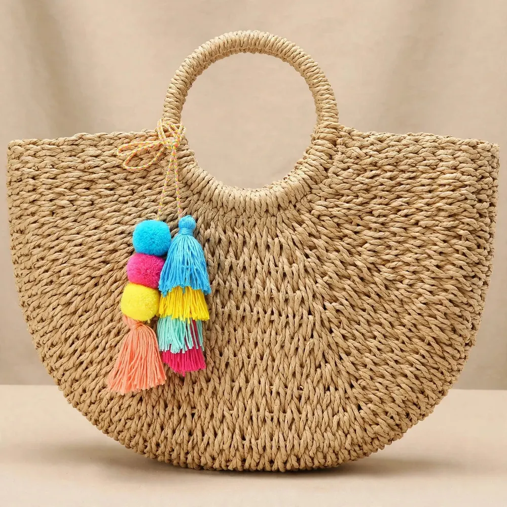
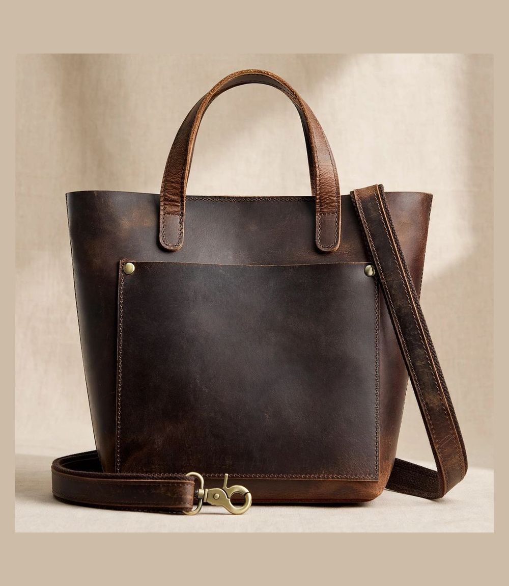
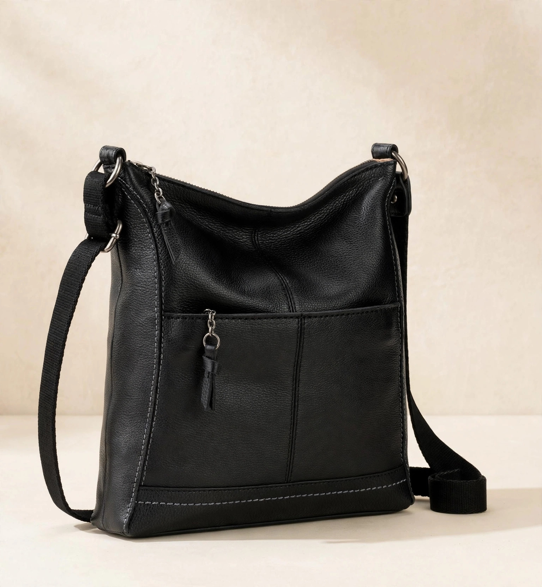
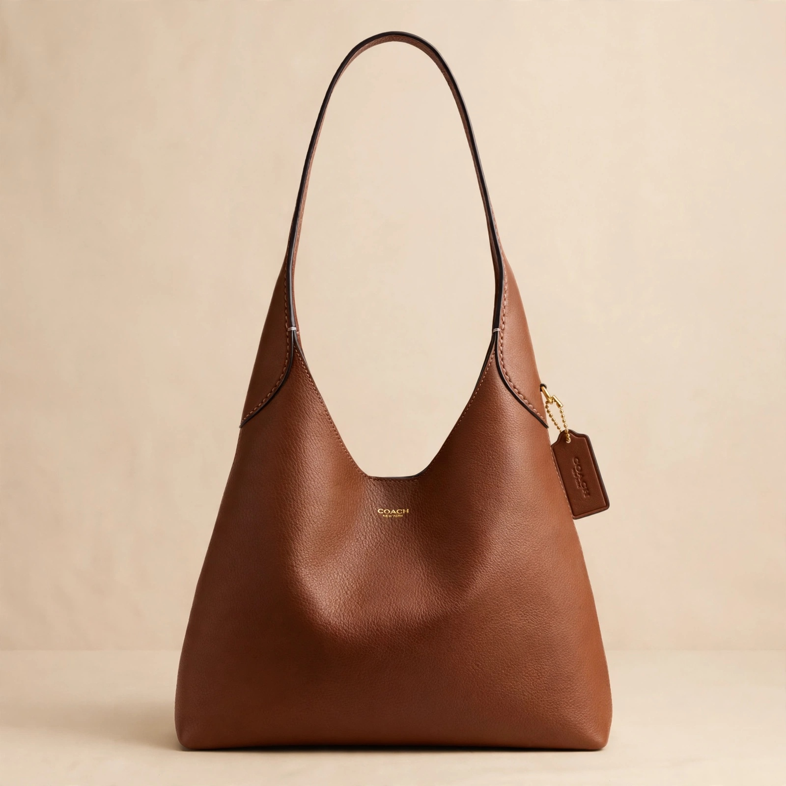

Social media is overflowing with claims of "unbelievable Amazon designer dupes." But peel back the filter, and cheap plastic hardware, stiff cardboard backing, and offensive chemical odors often tell a very different story. Our accessories desk spent weeks testing 25 viral Amazon handbags to identify the top 1% that truly look and feel high-end.
The 3 Hallmarks of a High-Grade Amazon Dupe
1. Supple Vegan Leather: Look for PU leather with natural pebble texture that drapes rather than creases stiffly.
2. Substantial Hardware: Choose bags with weighted alloy hardware rather than hollow electroplated plastic.
3. Lined Interiors: Reinforced canvas or microfiber suede interiors that resist fraying.
Top Recommended Bags
Our #1 top recommendation is the Soft Vegan Leather Slouchy Hobo Shoulder Bag ($28.90). Certified under modern sustainable textile standards, its crescent silhouette drapes effortlessly against the hip, easily holds a 13-inch laptop or tablet, and features heavy gold-toned zippers. For summer and resort travel, the Womens Large Woven Straw Tote ($19.59) provides durable hand-woven craftsmanship that easily rivals $200 boutique beach bags.
Designer Bag Dupes at a Glance: The Quick Comparison
Before the deep dives, here is the shortlist at a glance. Every bag below survived the screening process described in this guide — supple material, substantial hardware, a lined interior — and every price and rating is taken from the LOOKIQ catalog, checked October 2026. Amazon prices move often, so confirm the live price on the product page before you buy. Two picks are true dupes under $30, two are genuine-leather step-ups, and the last is the authentic designer piece the dupes are measured against.
| Bag | Style | Rating | Price | Best For |
|---|---|---|---|---|
| Soft Vegan Leather Slouchy Hobo | Everyday crescent hobo | 4.7★ | $28.90 | Best overall |
| Womens Large Woven Straw Tote | Woven summer tote | 4.5★ | $19.59 | Beach and resort travel |
| S-ZONE Leather Mini Crossbody Tote | Leather mini crossbody | 4.5★ | $69.99 | Hands-free polish |
| The Sak Lucia Leather Crossbody | Leather crossbody purse | 4.4★ | $104.30 | The leather upgrade |
| Coach Brooklyn Shoulder Bag 28 | Genuine designer bag | 4.5★ | $295.00 | The real-deal benchmark |
The Best Designer Bag Dupes on Amazon, Reviewed in Detail
A dupe earns its place here only if it passes the same test a stylist would run in a boutique: pick it up, work the zipper, look inside. Below is what each pick does well and where it works hardest in a real wardrobe.
1. Soft Vegan Leather Slouchy Hobo Shoulder Bag — Best Overall

The hobo stays at number one because it gets the expensive part right: the drape. Its scratch-resistant vegan leather (the catalog listing leads with exactly that) has a matte pebble grain that falls into a soft crescent against the hip instead of standing stiffly away from the body — the single detail that separates a convincing dupe from a costume. The secure magnetic zip closure keeps the top line clean, and the interior fit list is genuinely useful: an iPhone Pro Max, a wallet and a cosmetics pouch disappear inside, and our editors found room for a 13-inch laptop or tablet on workdays.
Rated 4.7 stars across more than 5,200 buyer ratings, it is also the most proven bag in this guide. How to wear it: this is the bag that finishes a trench coat and knitwear on a commute, then slouches correctly over a sweater and jeans on the weekend. Best for: one-bag wardrobes and anyone whose current tote looks cheaper than their outfit. See the full review and photos.
2. Womens Large Woven Straw Tote — Best for Summer and Resort Travel

Most straw totes fail on construction: open tops that spill, unlined interiors that snag sunglasses. This one is built differently. It is woven from 100% natural hand-braided corn husk straw, closes with a zipper top that actually secures your valuables, and is fully lined inside with a slip organization pocket — finishing details you normally meet on the $200 boutique beach bags our editors compared it against. The detachable rainbow pom-pom charm adds the playful note resort styling calls for — and removes in seconds when you want a grown-up read.
At $19.59 (list price $29.99) with a 4.5-star rating from more than 6,800 buyers, it is the lowest-risk pick in this guide. How to wear it: with a sundress and sandals for the beach run, or with white linen trousers and a tank for a market morning. Best for: vacations, beach days and summer gifting. See the full review and photos.
3. S-ZONE Leather Mini Crossbody Tote — Best Hands-Free Pick

Some days the right bag is the one you forget you are wearing. The S-ZONE mini is a genuine leather crossbody tote and satchel in one compact shape — structured enough to hold its line against a blazer, small enough to stay out of the way at a concert, a school run or a city break. It is rated 4.5 stars and priced at $69.99 (list price $94.49), the cheapest genuine-leather option in this guide.
How to wear it: crossbody over knitwear and trousers for daytime polish; carried by its top handles as a mini satchel for dinner. If hands-free carry is your whole priority, compare it against the dedicated picks in our best crossbody bags under $50 on Amazon guide before you decide. See the full review and photos.
4. The Sak Lucia Leather Crossbody Purse — The Leather Upgrade

The Lucia is what this guide recommends when the budget stretches past dupe territory and into keep-it-for-years territory. It is a leather crossbody purse from an established bag brand, with a zipper closure and an adjustable strap so the drop length sits exactly where you want it — on the hip for casual days, shortened for a cleaner line with dresses. At $104.30 (list price $149.00) and rated 4.4 stars, it costs roughly three and a half hobos; what the extra money buys is leather that develops character instead of wearing out, from a brand with a retail track record.
How to wear it: as the everyday anchor of a neutral wardrobe — it is the bag equivalent of the perfect white sneaker. Best for: buyers who have burned money on two cheap bags already and want the cost-per-wear math to finally work. See the full review and photos.
5. Coach Brooklyn Shoulder Bag 28 — The Real-Deal Benchmark

Full honesty: this one is not a dupe at all. The Coach Brooklyn 28 in Maple is the genuine designer article, in our catalog at $295.00 (list price $398.25) with a 4.5-star rating from nearly 1,000 buyers. We include it as the benchmark because every claim in this guide — drape, hardware weight, interior finish — is a comparison against bags like this one. Put the hobo and the Brooklyn side by side and the gap is real but narrow for most outfits: the Coach wins on leather depth and long-term resale logic, the hobo wins on price by more than $265.
Best for: the milestone purchase, the gift that has to land, or the one-bag-for-a-decade plan. For everyone else, the picks above exist precisely because the visual gap no longer matches the price gap. See the full review and photos.
How to Spot a High-End Dupe Before You Click Buy
Hardware and Zippers: The Ten-Second Test
Hardware is where cheap bags confess. In person, run three checks our accessories desk uses on every sample: the zipper pull should feel weighted, not tinny; the zip itself should travel in one smooth pull without catching at the corners; and clasps should close with a positive snap rather than a vague click. In photos, zoom in — literally. Listing photos that show the zipper teeth, the clasp engraving and the strap attachments up close are a good sign; listings that only show the bag from across a room are hiding the details that matter.
Stitching, Edges and the Interior
Turn your attention to the seams. Even, tight stitching with no loose threads at the stress points — strap roots, zipper ends, base corners — predicts how a bag ages far better than any material claim. Painted or folded edges should look clean, not gummy. Inside, insist on a lining: reinforced canvas or a microfiber suede finish that resists fraying, ideally with at least one pocket so keys stop scratching your phone screen. An unlined bag with raw interior seams is the most common reason a promising dupe gets returned.
Silhouette First, Logos Never
The dupes that read as expensive share one trait: they borrow a silhouette, not a logo. A clean crescent hobo, a woven tote, a mini satchel — these shapes signal taste without counterfeit energy, and they keep working after trends rotate. Our buying advice is blunt: if the listing leads with a monogram pattern or a lookalike brand mark, close the tab. Then do the two things that cost nothing — read the most recent buyer reviews rather than the top-rated ones, and check buyer photos for the hardware close-ups the brand photos avoid.
Styling Your Bags From Monday to Weekend
Rotation is what makes a small bag collection feel like a wardrobe. Monday to Friday, the hobo carries the commute: laptop in, magnetic zip closed, crescent sitting cleanly over a trench or blazer. For evenings and events, scale down to the S-ZONE mini or the Sak Lucia — a smaller bag against a dress reads deliberate, and the adjustable strap on the Lucia lets you tune the drop to the outfit. Weekends split by season: the Lucia or hobo for city errands and galleries, the woven straw tote the moment the temperature or the itinerary turns summery. One rule ties the rotation together: match the bag's structure to the outfit's structure. Soft, draped clothing wants the slouch of the hobo; tailored clothing wants the frame of the mini satchel or the crossbody.
Care Tips: Vegan Leather, Straw and Real Leather
A dupe that is cared for like a designer bag will be mistaken for one for years. Vegan leather: wipe with a soft, slightly damp cloth, skip harsh solvents, and store the bag stuffed with tissue so the crescent keeps its shape — keep it out of prolonged direct sunlight, which dries synthetic finishes. Straw: brush off sand after beach days, let the tote dry fully before storing it, and keep the zipper closed in the closet so the weave holds its line. Real leather, like the S-ZONE and Sak picks: empty it before storing, keep it in a breathable dust bag rather than plastic, and expect the surface to deepen in tone with wear — that patina is the return on the upgrade.
Designer Bag Dupe FAQs
What makes an Amazon designer bag dupe look truly high-end?
Look for the 3 hallmarks in this guide: supple PU vegan leather with a natural pebble texture that drapes rather than creases stiffly, substantial weighted alloy hardware rather than hollow electroplated plastic, and lined interiors in reinforced canvas or microfiber suede that resist fraying.
How many Amazon handbags did LOOKIQ test for this guide?
Our accessories desk spent weeks testing 25 viral Amazon handbags to identify the top 1% that truly look and feel high-end.
What is the top recommended designer bag dupe in this guide?
Our #1 top recommendation is the Soft Vegan Leather Slouchy Hobo Shoulder Bag ($28.90). Its crescent silhouette drapes effortlessly against the hip, it easily holds a 13-inch laptop or tablet, and it features heavy gold-toned zippers.
What is the best designer bag dupe for summer and resort travel?
The Womens Large Woven Straw Tote ($19.59) provides durable hand-woven craftsmanship that easily rivals $200 boutique beach bags.
Are designer bag dupes on Amazon actually good quality?
Quality varies widely, which is why this guide exists. The picks above passed our checks for supple materials, substantial hardware and lined interiors, and every bag featured here holds a rating of 4.4 stars or higher in the LOOKIQ catalog. Always read the recent buyer reviews on the product page before you order.
How do you care for a vegan leather bag so it keeps looking expensive?
Wipe it with a soft, slightly damp cloth and skip harsh solvents. Store the bag stuffed with tissue so a slouchy silhouette keeps its shape, keep it out of prolonged direct sunlight, and rotate it with a second bag instead of carrying it daily — rest days are what stop strap roots and corners from wearing first.
Explore Curated Amazon Handbags & Accessories
Discover editor-tested bags, sunglasses, and jewelry that elevate any everyday outfit.